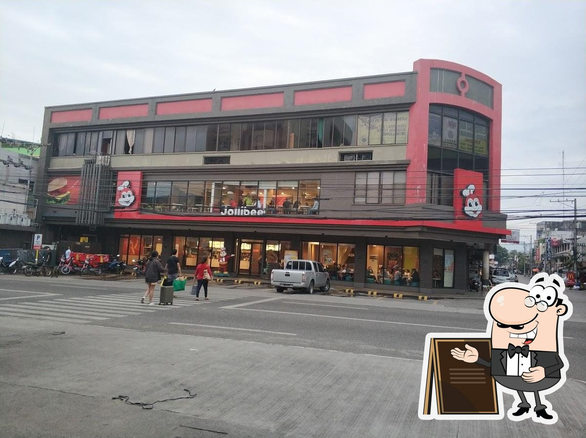
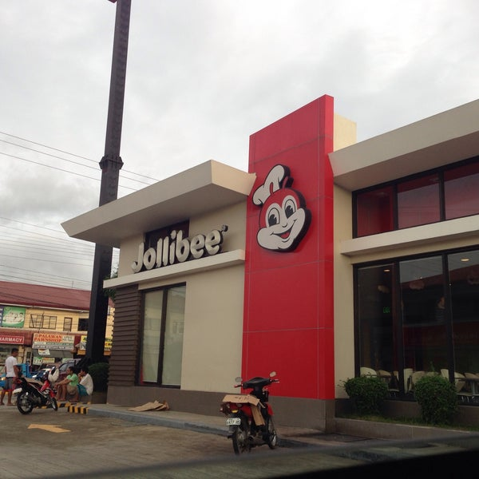
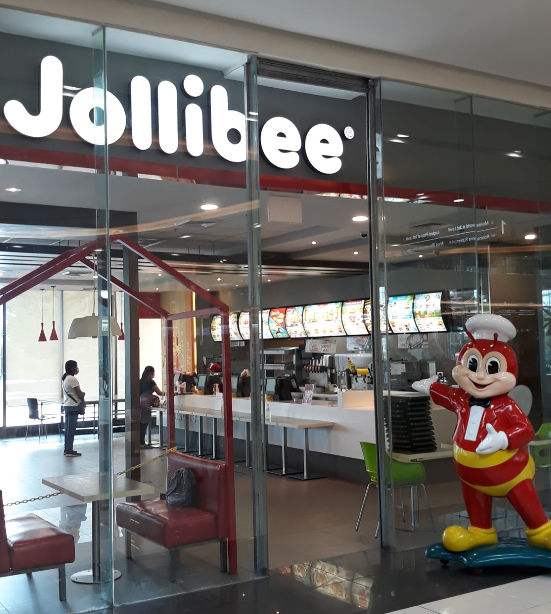
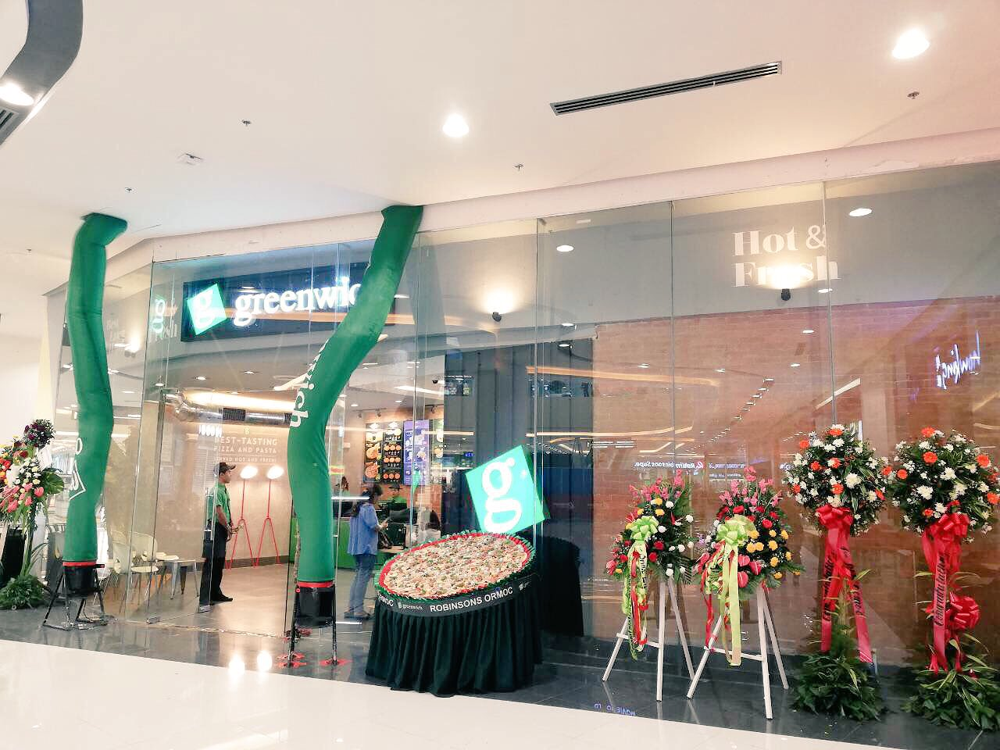
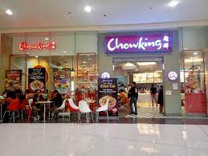
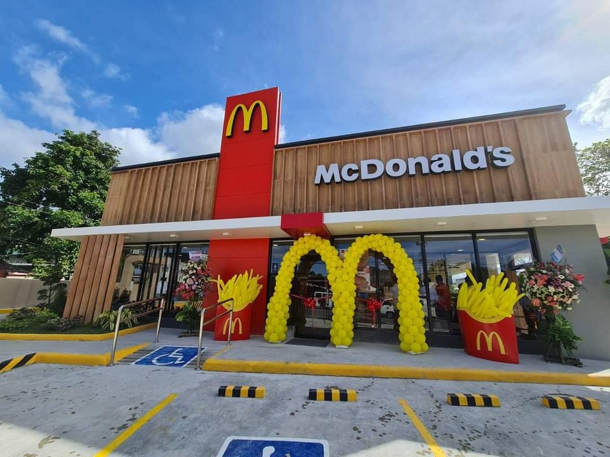
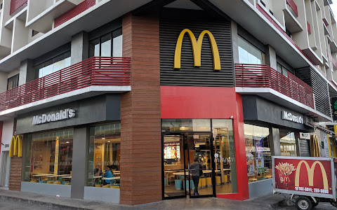
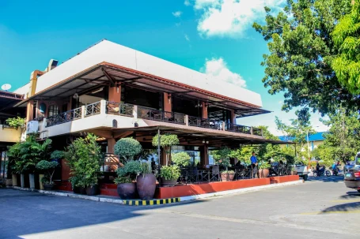

All Jollibee branches here in Ormoc City
Philippines-based chain known for its burgers, fried chicken, spaghetti & Filipino dishes.
Jollibee is the largest fast food chain brand in the Philippines, operating a network of more than 1,500 stores in 17 countries. A dominant market leader in the Philippines, Jollibee enjoys the lion's share of the local market that is more than all the other multinational fast food brands in PH combined.
Drive tru: Address: Lilia Ave, Ormoc, Leyte
Anecita Bldg., aviles, cor Rizal St, Ormoc, Leyte



Greenwich place in Robinson Ormoc City
Experience an overloaded seafood discovery with the NEW Cajun Shrimp Overload® Pizza.🌊😲 A cheesy savory, shrimp-sarap pizza that’s SHRIMPly irresistible!🦐🍕

Chowking place in Robinson Ormoc City
Chowking is a quick-service Chinese restaurant with Filipino inspired flavors. Originally from the Philippines, Chowking combines traditional Chinese cuisine with modern fast-food service.
Address: Ormoc Centrum Building, Level 1, Aviles St, Poblacion, Ormoc, 6541 Leyte

Milagrina in Ormoc City
Rating. 4.1(178 Reviews)
•Dine-in •Takeout
Loranzo's cafe` in Ormoc City
Lorenzo's Cafe` is a cafe` that has a very elegant and modern look. The ambiance gives comfort and will definitely give the customers a satisfying feeling.
Martinelli Pizza Deli
Ang praktikal nga regalo, kanang maka-smile ka sa ka-lami nga pagkaon!
We are now accepting reservations for the Christmas Season!
Martinelli Pizza Deli...
lami tanan!
Mcdo place every where in Ormoc, Use the map in home page to locate where it is!


Sutuwaki
Rating. 4.1(245 Reviews)
•Dine-in •Takeout •Outdoor seating
